Chapter 2: Relational Model
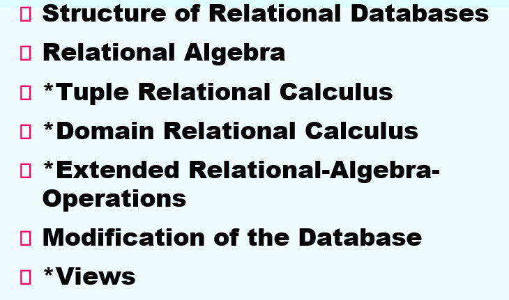
1. Structure of Relational DS
关系型数据库(relational ds): 一组由单个或基于多个关系模型的关系构成的容器
关系模型(relational model): 一种基于关系定义的数据库抽象
- 用简单的数据结构(关系)存储数据库
- 物理存储由DBMS实现
- 通过高级语言访问数据, DBMS会帮我们找到最佳执行策略
- 结构上, 数据库关系以及其内容的定义和它们的物理表示相互独立
- 完整性上, 能够确保数据库满足指定的约束
- 操作上, 提供了访问和修改数据库内容的编程接口
关系(relations): 一个无序集合, 里面包含了表示实体的属性的联系, 是用行(rows) 与 列(columns) 表示的一张 表(table)
2. Basic Structure
考虑集合$D_1, D_2, ..., D_n(D_i = a_{ij}|j=1...k)$, 一个关系r是$D_1 \times D_2 \times ... \times D_n$的子集(其中$\times$表示的是笛卡尔积)
- 因此一个关系是n-tuples(元组)$(a_{1j}, a_{2j},...a_{nj})$的集合
1. 属性类型(Attribute Types):
- 一个类型的每个属性都有一个名称
-
domain(域):对于每个属性, 所有其被允许的values的集合称作它的域
-
第一范式: 属性值必须是 atomic(原子) 的, 即不能被进一步分解的
- 特殊值null是每一个domain的成员
- null会在许多操作的定义中引发复杂问题
2. 关系相关概念(Concepts about relation):
- 一个关系关注两个概念: relation schema(关系模式)和 relation instance(关系实例)
-
relation schema描述了关系的结构
> 例如:- relation instance: 对应于某一时刻关系中数据的snapshot(快照)
-
Relation schema:
$A_1, A_2, ..., A_n$是属性
通常表示: $R = (A_1, A_2, ..., A_n)$是一个relation schema
r(R) 是在relation schema R上的一组关系
- Relation Instance
关系中的当前值, 通过一张表描述出来, 且会随着关系的更新而改变
关系中的一个元素t是一个元组, 在表中用一行(row) 表示
设一个元组变量t表示一个元组, 那么t[name] 表示元组t在name属性上的值
- Relations are Unordered
元组的顺序是无关的, 并且关系中的元组是没有重复(duplicate)的
- Keys(码, 键)
$K\subseteq R$
下述的所有键都可能包含多个属性, 且主键也不一定只包含一个属性
- superkey(超码): 若通过K的一个value, 就可以在每一个可能的$r(R)$中, 唯一确定一个tuple
- eg. {instructor-ID}
- candidate key(候选码): 若K是minimal superkey, 即没有其子集是一个superkey了
- primary key(主码): 如果K是一个candidate key并且被用户明确定义了;
-
primary key通常被下横线标记
-
Foreign key(外键, 外码)
假设存在两个关系r s: r(A, B, C), s(B, D), 我们可以说关系r中的属性B是一个外键referencing s, 并且r是一个参照关系(referencing relation) , s是一个被参照关系(referenced relation)
参照关系中外码的值必须在被参照关系中实际存在或者为null
- Query Languages 查询语言
用户从DB中请求数据所用的语言
"Pure" languages: Relational Algebra关系代数(SQL的基础); 元组关系演算; 域关系演算
3. Relational Algebra 关系代数
是一种过程型语言
六种基本操作:
- Select 选择
- Project 投影
- Union 并
- Set difference 差(集合差)
- Cartesian product 笛卡尔积
- Rename 重命名
这些operators 用一个或者两个作为输入, 并且给出一个新的关系作为结果
其它操作:
- Set intersection 交
- Natural join 自然连接
- Division 除
- Assignment 赋值
3.1. Select Operation 选择操作
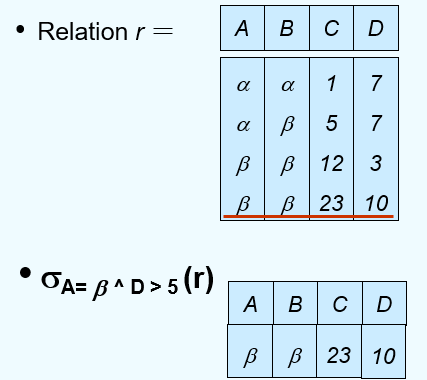
执行选择时, 选择条件必须是针对同一元组中的相应属性值代入进行比较
表达式: $\sigma _p(r)$
p 称作 选择谓词(selection predicate)
定义为$\sigma _p(r) = {t | t\in r and p(t)}$
其中p是一个命题逻辑公式, 由项(terms)通过逻辑运算符连接而成: $\land$(与), $\lor$(或), $\neg$(非)
-
每个项(term)是以下之一: <属性> op <属性(或常数)>;
-
其中op是以下之一: $= \neq > \geq < \leq$
3.2. Project Operation 投影操作
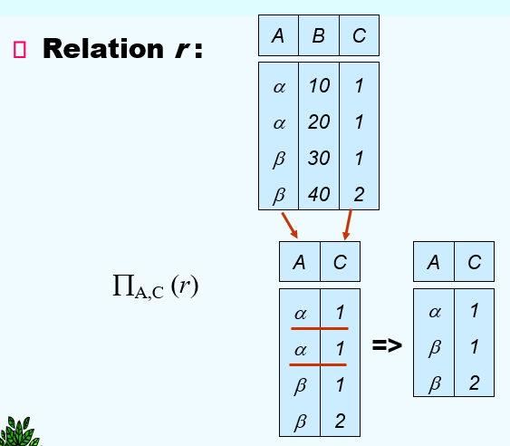
表达式: $\Pi _{A1, A2, ..., Ak}(r)$, 其中$A1,...Ak$都是属性名字, 并且r是一个关系名
结果被定义为k-columns的关系, 通过从原本的关系中去除未被列出来的columns
重复的两个rows会被从结果中去除
3.3. Union Operation 并操作
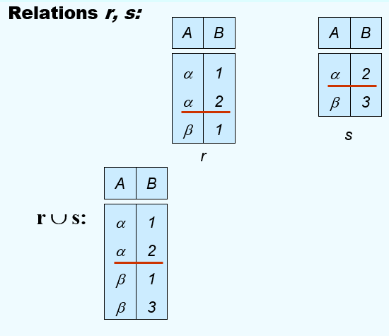
**表达式: **$r \cup s$
被定义作: $r \cup s = {t|t\in r or t\in s}$
并操作有效, 必须满足以下条件:
- r和s必须具有相同的元数(等目, 同元, same number of attributes)
- 属性的域必须兼容(例如, r的第二列处理的数据类型, 应该和s的第二列相同)
3.4. Set Difference Operation 差操作
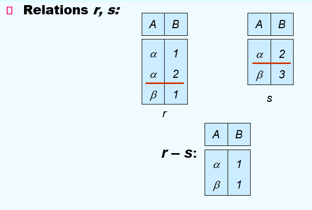
表达式: $r-s$
定义: $r-s = {t|t\in r and t \notin s}$
差操作有效, 必须满足:
- r 和 s 必须同元
- r 和 s 的属性域必须兼容
3.5. Cartesian-Product Operation 广义笛卡尔积
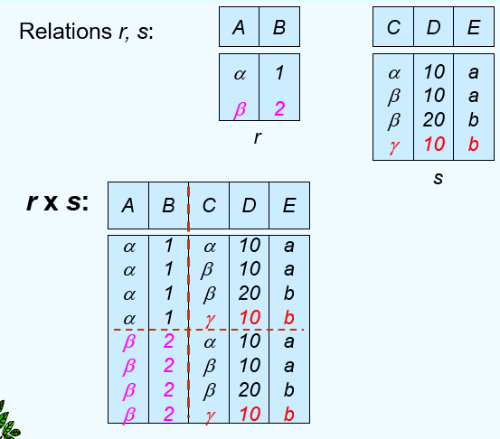
表达式: $r \times s$
定义: $r \times s = {{tq}|t\in r and q \in s}$
假设r(R)和s(S)是不相交的($R \cap S = \varnothing$)
如果r(R)和s(S)是不相交的, 那么必须对属性进行重命名
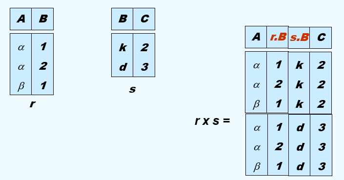
3.6. Composition of Operations 操作的复合
可以通过多种操作去构建表达式
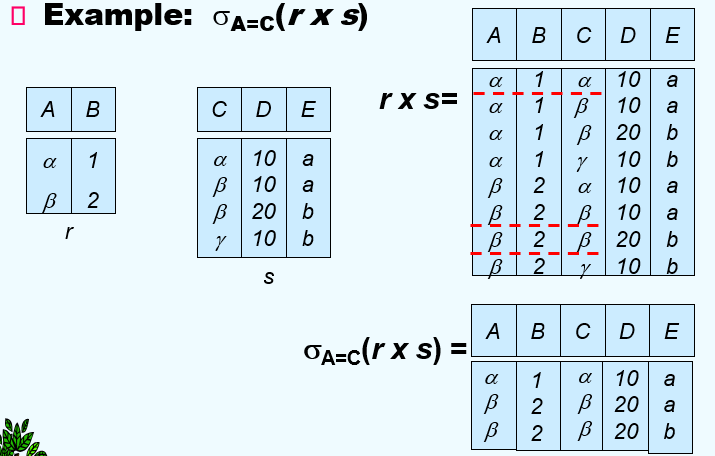
3.7. Rename Operation 重命名操作
- 允许我们为关系代数表达式的结果命名, 从而可以去引用它(过程性)
- 允许我们去引用一个关系, 通过不止一种名字
例如:
-
$\rho _X(E)$, 返回表达式 E 通过名字X
-
若关系代数表达式 E 有n个元数, 那么$\rho _{x(A1,A2,...,An)}(E)$, 则是对关系E和它的属性都进行重命名
3.8. Additional Operations
我们定义了一些额外的操作, 虽然这些操作不会赋予关系代数额外的能力, 但是可以简化一些常见的查询操作
8.1. Set-Intersection Operation 交操作
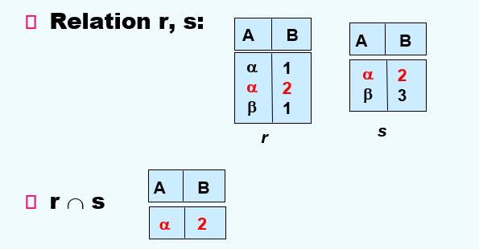
表达式: $r\cap s$
定义: $r\cap s = {t|t\in r and t\in s}$
若交操作有效, 需要满足: r, s同元; 且r和s的属性可兼容;
note: $r\cap s = r - (r - s)$
8.2 Natural-Join Operation 自然连接操作
表达式:
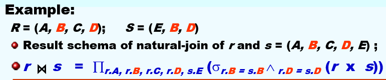
若 r 和 s 分别是 关系模式R 和 S 上的关系, 那么 r 和 s的自然连接则是关系模式$R\cup S$上的关系, 且通过以下步骤构造:
-
考虑每对元组$t_r$来自r , $t_s$来自s
-
若$t_r$和$t_s$在$R\cap S$中的每个属性上拥有相同的值, 则向结果中添加一个元组t, 其中:
- t 在 r的属性上的值和$t_r$相同
- t 在 s的属性上的值与$t_s$相同
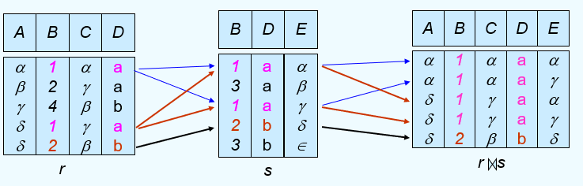
- r, s必须含有共同属性
- 连接两个关系中同名属性值相等的元组
- 结果属性是二者属性集的交集, 但消去同名属性
Theta 连接(条件连接):
$\theta$是在关系模式中, 对于属性的谓词
8.3 Division Operation 除操作
表达式: $r \div s$
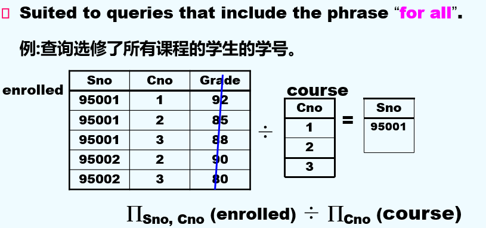
假设 r 和 s 分别是在关系模式 R 和 S 上的两个关系, 其中:
- $R = (A_1, ..., A_m, B_1, ..., B_n)$
- $S = (B_1, ..., B_n)$
则$r \div s$的结果是定义在关系模式 $R - S = (A_1, ..., A_m)$ 上的关系, $$ R \div S = {t | t \in \Pi_{R-S}(r) \land \forall u\in s (tu \in r) } $$
商来自于$\Pi _{R-S}(r)$, 并且其元组t与s所有元组的拼接被r覆盖
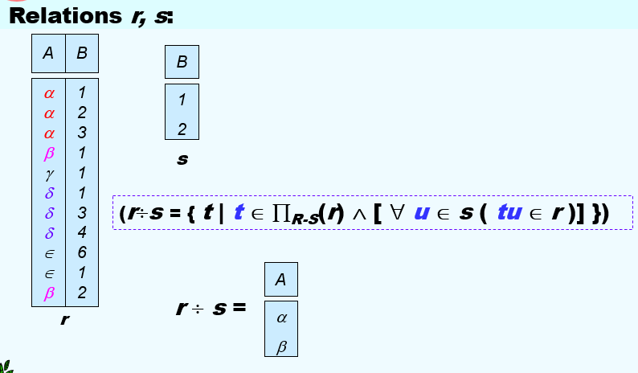
性质: 假设 $q = r \div s$, 那么q就是满足$q\times s \subseteq r$的最大关系
该预算适用于所有带有"for all"字样的语句
用基本代数运算定义除法操作: 设$r(R)和s(S)$是两个关系, 且$S\subseteq R$
则: $$ r \div s = \Pi {R-S}(r) - \Pi{R-S}((\Pi_{R-S}(r)\times s) - \Pi_{R-S, S}(r)) $$
-
其中$\Pi_{R-S, S}(r)$只是对r的简单重排序
-
$\Pi_{R-S}((\Pi_{R-S}(r)\times s) - \Pi_{R-S, S}(r))$得到了所有定义在$\Pi_{R-S}$中的元组t, 满足$u \in s, tu\notin r$
8.4 Assignment Operation 赋值操作
赋值操作提供了一个简便的方式来表达复杂的查询
- 将查询写成一个由以下组成的顺序程序：
- 一系列赋值语句
- 后跟一个表达式, 其结果作为查询输出显示
- 赋值必须总是赋给一个临时关系变量
示例: 将$r \div s$写为: $$ temp1 \leftarrow \Pi_{R-S}(r) \ temp2 \leftarrow \Pi_{(temp1 \times s) - \Pi_{R-S,S}(r)} \ result = temp1 - temp2 $$
右边表达式的结果被赋值给临时变量
3.9. Summary
-
Union, set difference, Set intersection 为双目, 等元运算符
-
Cartesian product, Natural join, Division为双目运算符
-
Project, select 为单运算对象
-
关系运算优先级:
-
Project
- Select
- Cartesian Product
- Join, Division
- Intersection
- Union, difference
4. Extended Relational-Algebra-Operations
- Generalized Projection 广义投影
- Aggregate Functions 聚合函数
- Outer join 外连接
4.1 Generalized Projection 广义投影
扩展了投影操作, 允许在投影列表中使用算数函数 $$ \Pi_{F_1, F_2, ...,F_n}(E) $$
- E 是任意的关系代数表达式
- 每个$F_1,...,F_n$都是包含常量和E的模式中的属性的算数表达式
传统的投影只能选择已有属性, 而通用投影允许我们在投影中进行计算,并且新增派生属性
4.2 Aggregate Functions and Operations 聚合函数以及操作
聚合函数接收一系列值, 并且返回一个单一值作为结果
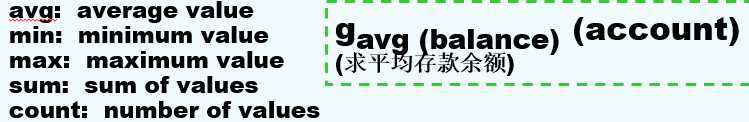
聚合函数在关系代数中: $$ {G1, G2, ...,Gn}g{F1(A1), F2(A2), ..., Fn(An)}(E) $$
- E 是任意的关系代数表达式
- $G1, G2, ..., Gn$是用于分组的一系列的属性（可以为空）
- 每个$F_i$是一个聚合函数
- 每个$A_i$是一个属性名字
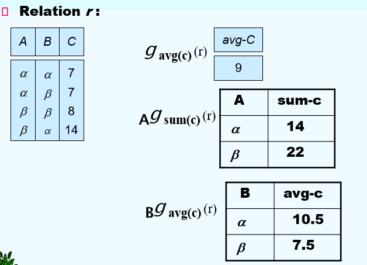
4.3 Outer Join 外连接
外连接是一种为了避免损失一些信息的连接操作
先计算连接, 然后从一个关系中添加未匹配的元组到结果中
使用null值:
null表示这个值是unknown或者不存在的- 所有涉及
null的比较默认为假
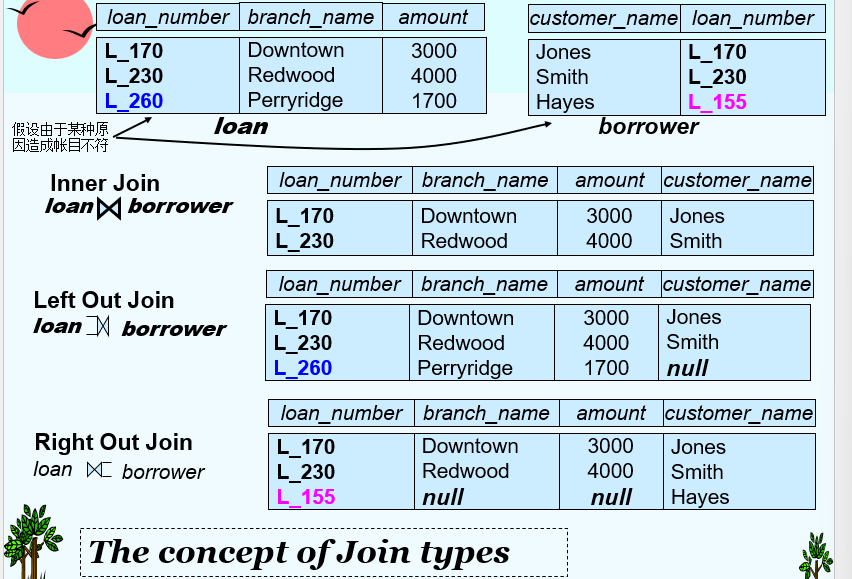
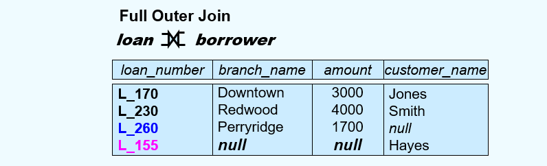
4.4 Null Values
对于元组中的一些属性, 其值可能为null value, 定义作null
null表征一个unknown值 或 这个值不存在
对于任何涉及null的算数表达式, 其结果都是null
聚合函数简单的忽视 null values
- 这是一个任意决定，也可以返回
null作为结果 - 我们遵循SQL在处理
null时的语义
对于重复值消除和分组操作, null被当作普通值处理, 两个null被视为相同
- 替代方案: 假设每个
null彼此都不同
与null值的比较会返回一个特殊的真值unknown
- 如果用
false代替unknown, 那么 $not(A < 5)$就不等价于$A \geq 5$
因为 A<5变为false, 则not(false)就变为true
但是 A>=5 依旧为 false, 则二者不再等价
使用三值逻辑, 其中真值包括: true, false, unknown
- or 操作:
- unknown or true = true
- unknown or false = unknown
- unknown or unknown = unknown
- and 操作:
- true and unknown = unknown
- false and unknown = false
- unknown and unknown = unknown
- not 操作:
- not known = unknown
- 在SQL中, "P is unknown"这个条件在谓词P的结果为
unknown时, 其值为true - 选择条件结果为unknown时, 则被当作false处理
4.5 Modification of the Database
使用以下操作去修改数据库的内容:
- Deletion
- Insertion
- Updating
这些操作使用赋值操作去表达
4.5.1 Deletion
删除请求的表达方式类似于查询，只不过只是从数据库中删除这些元组；
只能删除完整的元组，不能只删除某个属性上的值；
在关系代数中，表示为：$r \leftarrow r - E$
- 其中 r 是一个关系
- E 是一个关系代数查询表达式
4.5.2 Insertion
- 写一个查询, 其结果作为插入元组的集合去插入
- 具体单独一个元组插入
关系代数中: $r \leftarrow r \cup E$
-
其中 r 是一个关系, 而 E 是一个关系代数表达式
-
对于单一元组的插入, 可以令 E 为包含单个元组的常量关系来使用
4.5.3 Updating
一种机制去修改元组中的一个值， 而不是改变元组中的所有值
使用广义投影去完成这个任务： $$ r \leftarrow \Pi_{F1, F2,...,Fi,}(r) $$
-
每个$F_i$:
-
是 关系r 的第i个属性, 如果第i个属性不被更新
- 或者, 如果这个属性将被更新, 则其是一个表达式, 涉及常数 和 r的属性, 这个式子给出了这个属性的新值